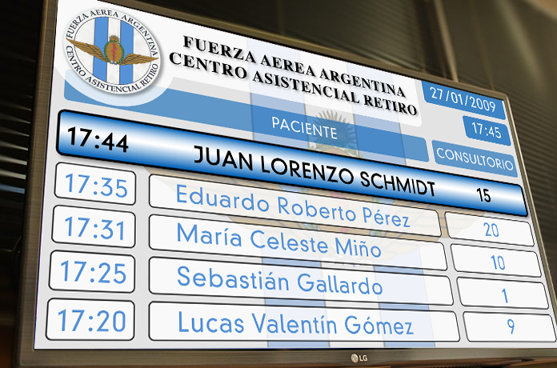

Avisos por Pantallas
Integrado con los sistemas de turnos e historias clínicas, permite colocar una o más pantallas en la o las salas de espera de la institución.
Cada profesional, en su consultorio, visualiza en el Sistema de Historias Clínicas el paciente que ya está en la sala de espera, y con un click lo “llama” a través de la pantalla, que le indica al paciente en qué consultorio será atendido. Se permite definir qué pantalla corresponde a cada consultorio. Permite que un profesional atienda en cualquier consultorio (al loguearse con su usuario, el sistema reconoce el consultorio en el que está y direcciona sus pacientes a ese consultorio).
